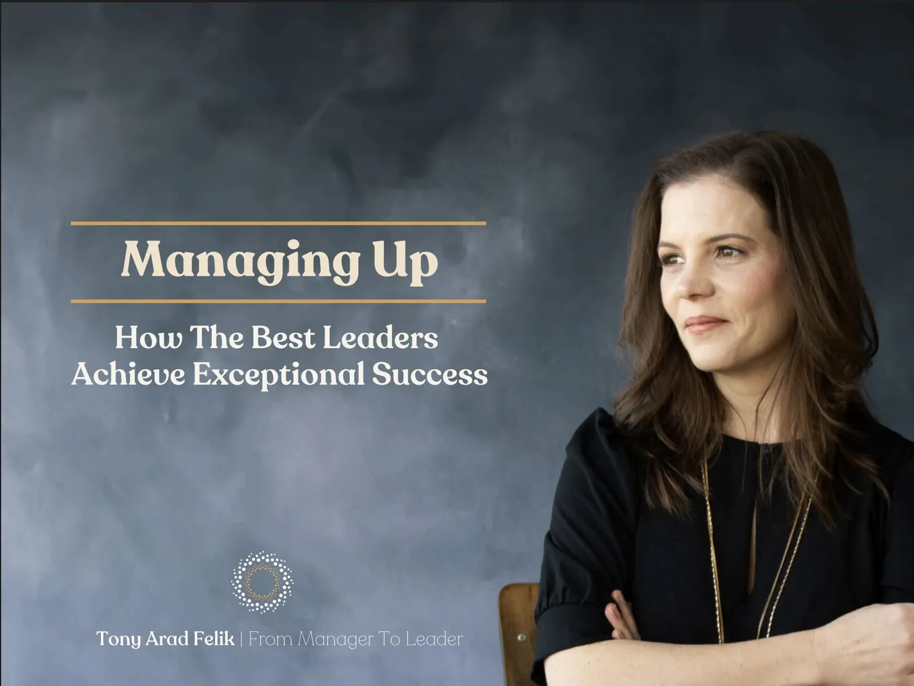

A CustomGPT for better 1:1 preparation
Originally posted on LinkedIn, June 16, 2025.
Are you really prepared for your 1:1s? I do not mean showing up with a list of tasks from the past week. I mean thinking ahead:
- What do you want to get from the conversation?
- Where do you need support?
- Which successes should you highlight?
After attending Tony Arad Felik’s “Managing Your Manager” workshop, yes, Tony from the podcast, I came away with a practical set of principles for turning every 1:1 into a strategic meeting. But I knew how easy it would be to fall back into my routine and forget to prepare.
So I built a personal GPT for myself and the other workshop participants: Manage Up, preparing for a 1:1 with your manager.
I finally found a practical use for CustomGPT. The bot asks me the right questions, reminds me of the workshop’s principles, and sharpens my focus before every meeting. Those 5 minutes produce a completely different conversation.
